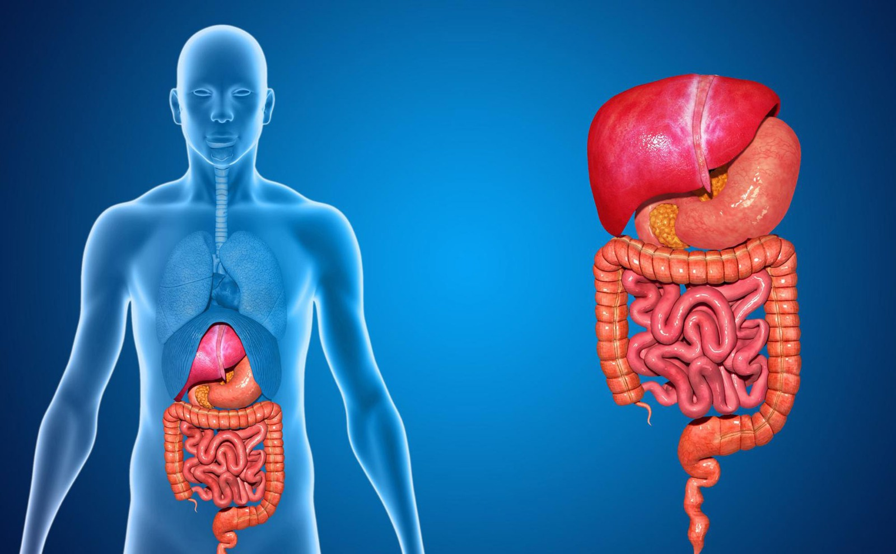
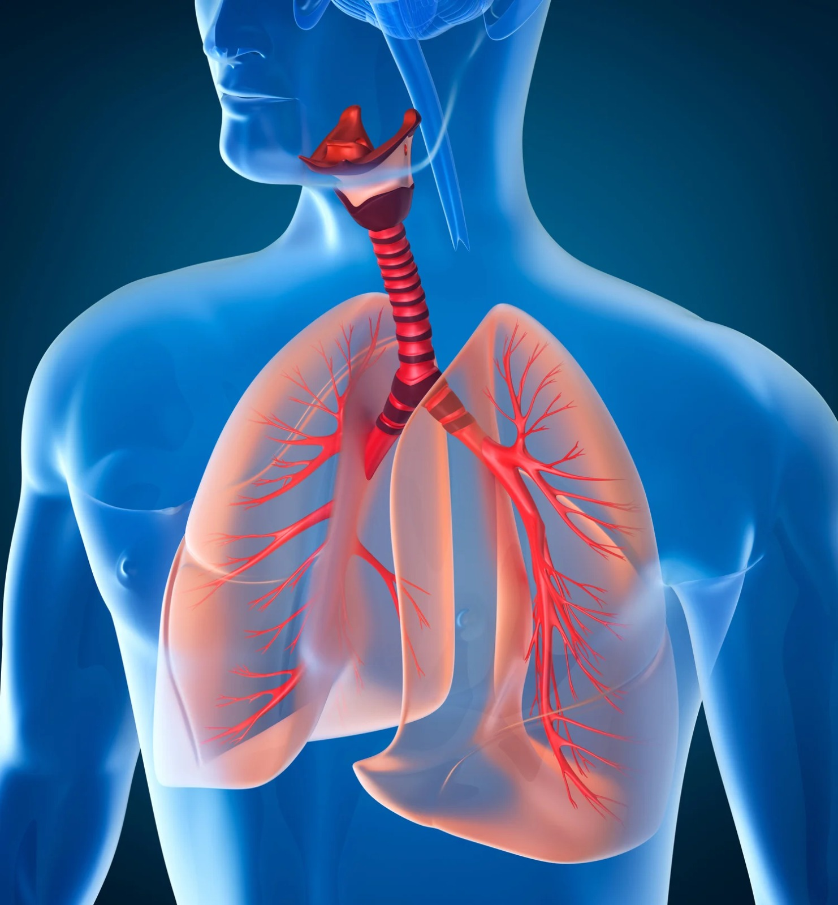
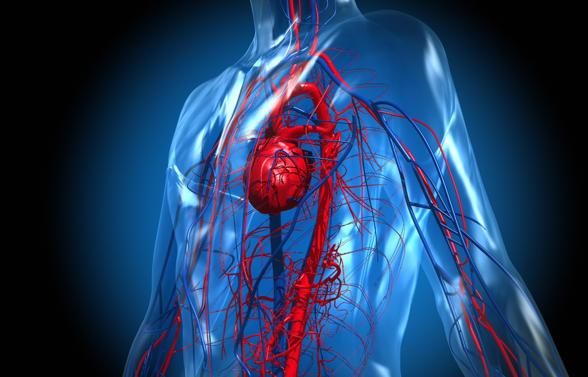

Cosa Vedere al Museo del Corpo Umano
Le sale principali
 |
 |
 |
|
| Apparato Digerente | Apparato Escretore | Apparato Respiratorio | Apparato Cardiocircolatorio |

Cos'è B.I.O.S.?
Si tratta di un progetto sostenuto dalla scuola superiore di primo grado Liceo Scientifco Paolo Ruffini di Viterbo,
il cui scopo è quello di integrare insieme le discipline di Scienze anatomiche e Informatica in una improbabile e coinvolgente combinazione.
Tutto il materiale che vedrete in seguito sarà frutto esclusivo del duro lavoro e dedizione degli studenti della classe 3CS, e degli insegnamenti
dei docenti Roberta Bastianelli (genetista e insegnante di Scienze Naturali) e Maria Grazia Santini (Insegnante di Informatica).